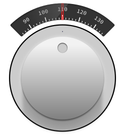

hi there,
This is just a knob - a virtual one, made using Inkscape.
I have used instruments in laboratories like oscilloscopes and function generators and
played with them for significant part of my life so far.
With the rise of Human Machine Interfaces, there is still a good widget library that
could satisfy the requirements for engineers of instrumentation, communication, students,
researchers, who would like to keep their hands dirty :).
I have long been thinking about an alternative for proprietary software tools which target
these scientifically rich community. One must see, that a set of research community needs
instruments with essential controls and output interfaces. When these proprietary tools
offer such a convenience as a packages, these morons who do not value their liberty - even
with their scientific temper - could not think straight, fell for it, agrees the terms and
conditions, purchase em out of peoples hard earned tax money & promote these packages.
Sincerely, i do not know what these "scientists" and their "engineers & interns" are
capable of doing, while they cannot create stuff for their own requirements, and propagate
its use among their communities.
Being said that, i know that it is also them who support and accelerate open access, free
software, information dissemination by design, collaboration - and have created significant
contributions in the fields like, geosciences, operating systems, mathematics, computation
and simulation systems. Honestly, when i learn about them, i feel so so so awesome.
With the shift towards open technologies, symbiotic networks between disciplines - still not
much contribution towards satisfying the needs of such community. It has to be not only for
the such people alone but for commons in common. I am not saying that it has to be pushed
as institutionalized mechanisms but some emergence has to be built upon. Not all of us are
programmers, designers, researchers... still, necessity is necessity, we shall not make it
the slightest mistake to honour it as elitist luxury accessible by moron scientists &
engineers.
In such a path of emerging contribution, i consider this tiny teeny project is a small
contribution towards it.
I must thank : Aaron Nieze for his simple and nice tutorial on Tachometer. @/.\ ----+----------------------------------------------+
/ \ | Bro, control your mind, its not even funny ! |
+----------------------------------------------+
+----------------------------------------------+---- ( me )
| Yea, its rough, i will regain the tract back |
+----------------------------------------------+

As you see it nicely fits and matches this dark grey background.... !
Imagine the same kind of stuff, that can fit a particular projects needs,
like sliders, graphs & plots - it will really look "geeky"... you know what i mean ??
I have made this knob, with impetus of using this passive svg's to use as a
widget in the widget collection library by using the svg straitly or atleast reuse
the design flow in the vala code for GTK-GNOME based applications. Moreover, i desire
to have a really good technical widget collection with GNOME stack.
@/.\ ----+----------------------------------------------+
/ \ | You moron, afaik, you sit and procrastinate, |
| why whine ? |
+----------------------------------------------+
+----------------------------------------------+---- ( me )
| U know what ? i am planning to delete U soon |
+----------------------------------------------+
Now, how did i draw that stuff in Inkscape ???
@/.\ ----+-----------------------------------------------+
/ \ | Yo, beware this fool has not shown every step |
| of the process... be sure to access the |
| resources below ! |
+-----------------------------------------------+
+-----------------------------------------------+---- ( me )
| Imbecile, i dont want to fill this page with |
| all microsteps involved, let em take the file |
| and play with it.... ! |
| i am lazy and i am not a fucking tutor... |
| i just share share stuff... a fellow sharer ! |
+-----------------------------------------------+
Ummm.. people, i believe that the raw svg file can be used with some
animation library that recognizes svg objects... for example :
1. Snap svg library @/.\/ \
***********************************************************************
\ /
+-------------------+
| |
| R E S O U R C E S |
+-------------------+
+--------------------+
| Links & Downloads |
+--------------------+----> 1. Knob know how detail file @/.\/ \
***********************************************************************
\ /
+---------------+
| |
| L I C E N S E |
.---------------.


{kind=link}